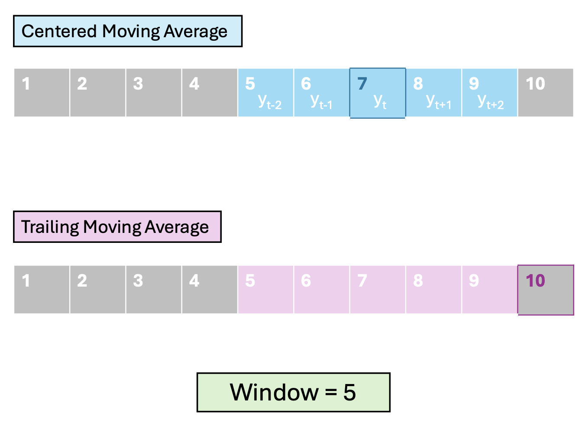
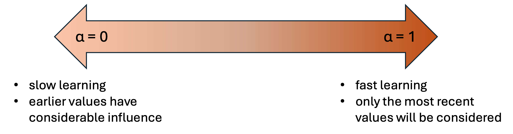
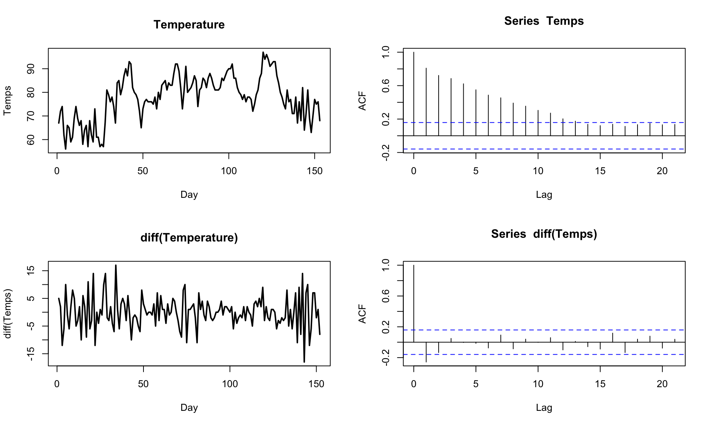
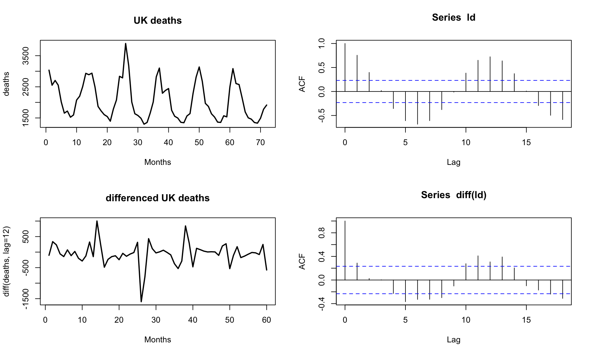
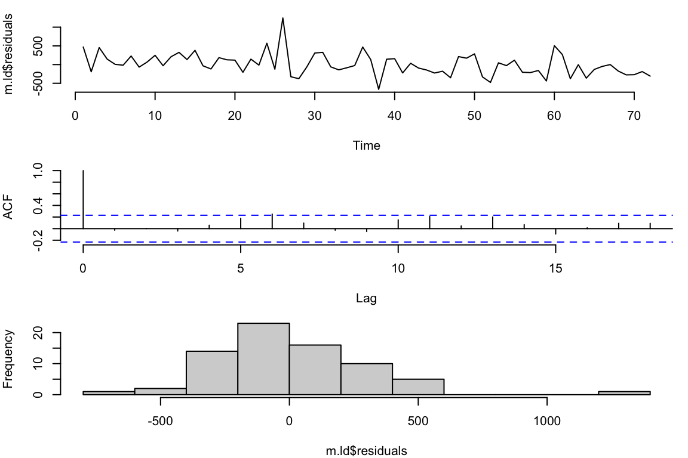
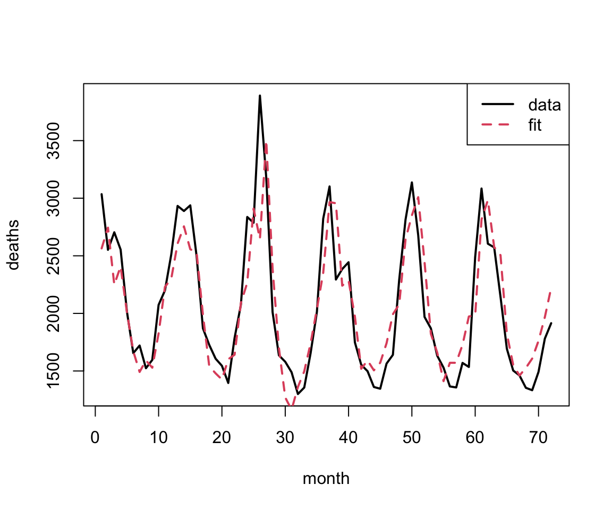
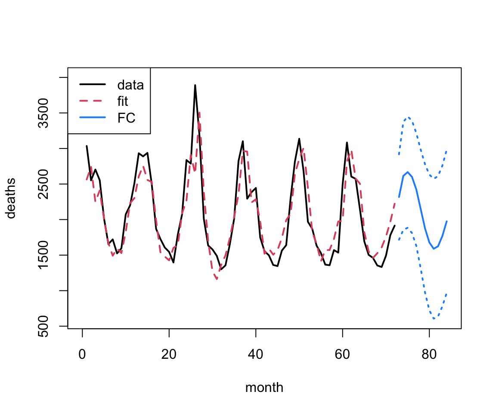

VectorByte Methods Training
Time dependent data may be considered a comprise a time series (TS) if the data are observed at evenly spaced intervals.
We can classify the patterns that we wish to quantify with a time series model into five categories:
We previously used a regression approach to allow us to explore these patterns:
We want to expand our toolbox and give ourselves more options to build models, and eventually use them to forecast!.
Often one of the first things we want to do is smooth a TS. This is simply averaging multiple time periods to reduce noise.
This can, on it’s own, bring out the “signal” in a TS.
It’s also super useful to produce smoothed time dependent predictors, so that you’re not using noise/extreme values to predict patterns in your target TS.
In a MA model, average over a window of consecutive periods.
We define the window by:
It is also possible to weight the time points, e.g., make nearby times more important.
We consider two main orientations
\[ \begin{align*} MA_{t,w} = & \left(y_{t - (w-1)/2} + \cdots + y_{t-1} \\ + y_t + y_{t+1} + \cdots + y_{t - (w-1)/2} \right)/w \end{align*} \]

In base R, the filter function gives us an easy way to explore the effect of smoothing.
In base R, the filter function gives us an easy way to explore the effect of smoothing.
In base R, the filter function gives us an easy way to explore the effect of smoothing.
Instead of weighting all points the same, or manually determining weights, Exponential smoothing/moving average (ema) uses a special weighting of \(k\) past values: \[ \begin{align*} ema_{t+1} = & \alpha y_t + \alpha(1-\alpha)y_{t-1} + \alpha(1-\alpha)^2 y_{t-2} \\ & + \cdots + \alpha(1-\alpha)^k y_{t-k} \end{align*} \] where \(\alpha\) is a smoothing constant between 0 and 1. This can be rewritten as a recurssion:
\[ ema_{t+1} = \alpha y_t + \alpha(1-\alpha)ema_{t} \]
The value of \(\alpha\) determines the influence of points farther in the past. This is sometimes called the “rate of learning”

Default values are often around 0.1 - 0.2.
The filter function doesn’t give us quite what we want. Instead we can use the EMA function in the TTR package:
We can combine the idea of smoothing back to capture signal while recognizing the high amount of correlation at nearby time-steps using Auto-Regressive Moving Average (ARMA) models.
We combine the AR(\(p\)) (i.e., using \(p\) lags) with a (trailing) MA(\(q\)) model (i.e., window of size \(q\)).
But how do we build the model?
The tricky bit is that the MA part that goes into the model is not the result of the smoother itself (i.e., it’s not the \(F_t\) on Slide 7).
Instead, we use the residuals – that is, how far the data at the previous time points are from the smoothed estimate based on \(q\) previous times: \[ \varepsilon_{t-1} = y_{t-1} - F_{t-1, q} \]
The ARMA(\(p,q\)) model is then a regression model (like we saw in our previous AR model) but with extra parameters and terms corresponding to those errors: \[ \begin{align*} y_t =~& \beta_0 + \beta_1 y_{t-1} + \cdots + \beta_p y_{t-p} \\ & + \varepsilon_t + \theta_1 \varepsilon_{t-1} + \cdots \theta_q \varepsilon_{t-q} \end{align*} \]
Pros:
Cons:
In order to relax the assumption of stationarity and allow for seasonality/periodicity, we can add another letter “I” for Integrated and “S” for Seasonal.
What does this mean?
First a digression….
AR/ARMA models without explicit trend or periodic components can only describe data that are stationary.
It turns out that we fiddle with a non-stationary TS to get something that is stationary through differencing:
Lag-1 differencing removes trends from a TS:

Lag-\(n\) differencing, where \(n\) is the number if steps in a cycle, removes/reduces a seasonal signal from a TS:

Now we can get to ARIMA. If we define the Lag-\(d\) differenced time series data as \(y'_t\) then an ARIMA(\(p,d,q\)) model is just:
\[ \begin{align*} y'_t =~& \beta_0 + \beta_1 y'_{t-1} + \cdots + \beta_p y'_{t-p} \\ & + \varepsilon_t + \theta_1 \varepsilon_{t-1} + \cdots \theta_q \varepsilon_{t-q} \end{align*} \] That is, it’s an ARMA model but on the differenced time series to take care of trends.
\(\Rightarrow\) like adding polynomial terms in our regression context.
One advantage of ARIMA modeling is that there are automatic ways to choose the order of your model (the \(p, q\), and \(d\)).
This can be convenient when you are only interested in forecasting/prediction.
\(\Rightarrow\) We can use the auto.arima function in the forecast package.
#> Series: ld
#> ARIMA(4,0,1) with non-zero mean
#>
#> Coefficients:
#> ar1 ar2 ar3 ar4 ma1 mean
#> 1.3183 -0.6933 0.2816 -0.3366 -0.5470 2064.6060
#> s.e. 0.1514 0.2142 0.1946 0.1236 0.1258 37.8362
#>
#> sigma^2 = 93935: log likelihood = -512.61
#> AIC=1039.21 AICc=1040.96 BIC=1055.15
#>
#> Training set error measures:
#> ME RMSE MAE MPE MAPE MASE ACF1
#> Training set 7.15877 293.44 222.1163 -1.384454 10.62095 0.7255362 -0.02699781Check the residuals:

One big outlier, but otherwise not too bad
Within-sample predictions:


You can include multiple sets of differences in your model.
Specifically, if your differencing reflects the number of time steps over which you observe a periodic pattern, you can add this extra bit on top and create a SARIMA model.
This also requires a second set of variables (\(P,Q\) and \(D\)) to specify what is effectively a second entire model built on the lagged dataset.
Let’s say you have time series data, and you had some other model that you wanted to fit – maybe an ODE or even just a smoother.
Often you find that your predictions/forecasts aren’t great because you don’t account for autocorrelation in the error
How can we incorporate this?
It turns out we can do something really simple to correct for this extra autocorrelation and get better predictions:
This works surprisingly well – we’ll see an example of this in the practical.
Regression type approaches are highly flexible, and data don’t need to be evenly spaced
lagged predictors can be used as long as the aren’t predictor values missing
Once you add any AR or MA components, or differencing, you must have evenly spaced data w/o gaps
interpreting ARIMA and similar models is tricky – usually they’re better for forecasting
TS analysis is a huge field – we’re only scratching the surface!
We’re going to practice our TS modeling approaches through the lens of forecasting.
That is, we’re going to focus on how to use our TS models to produce a prediction of what we think might happen in the future.
This is actually trickier to do well than you might think…
We’ve already learned a few ways to explore how good our model is on the data that we’ve trained it on (within sample).
Mostly we’ve focused on qualitative metrics:
What about quantitative metrics?
RMSE is one of the simplest quantitative metrics to calculate: \[ \text{RMSE} = \left(\frac{1}{n}\sum_{i=1}^n (y_i - \hat{y}_i)^2 \right)^{1/2} \] where \(e_i = y_i - \hat{y}_i\) is the residual for the \(i^{\text{th}}\) data point.
This gives us a quantitative measure of how close, overall, our predictions are to the data.
Because RMSE requires that we know the data values, the obvious use is to use it to compare within-sample – fit a couple of models, calculate RMSE, and use it as a tool to decide which model might be better (along with residual diagnostics).
What about forecasting?
If we knew what the future values were going to be, we could also calculate RMSE and compare models!
Data partitioning – dividing data into a training set to fit the model and a testing set where we make predictions – is a standard statistical technique.
Often the testing and training sets are divided up randomly (maybe many times) so you don’t accidentally bias your experiment.
However, we cannot remove data at random from a time series as it will impact all aspects of the analysis.
When we are dealing with time dependent data, we instead systematically leave out data.
If we have data from times 1 to \(t_{\text{max}}\) we choose a final window of data to leave out:
Then we fit the model just to the training data, make the forecast from the model, and calculate RMSE just on the testing data.
In the next practical, we’re going to use our new time series methods on a new data set on tree greenness.
As part of this you’ll practice all of the steps in the forecasting cycle (except the last).